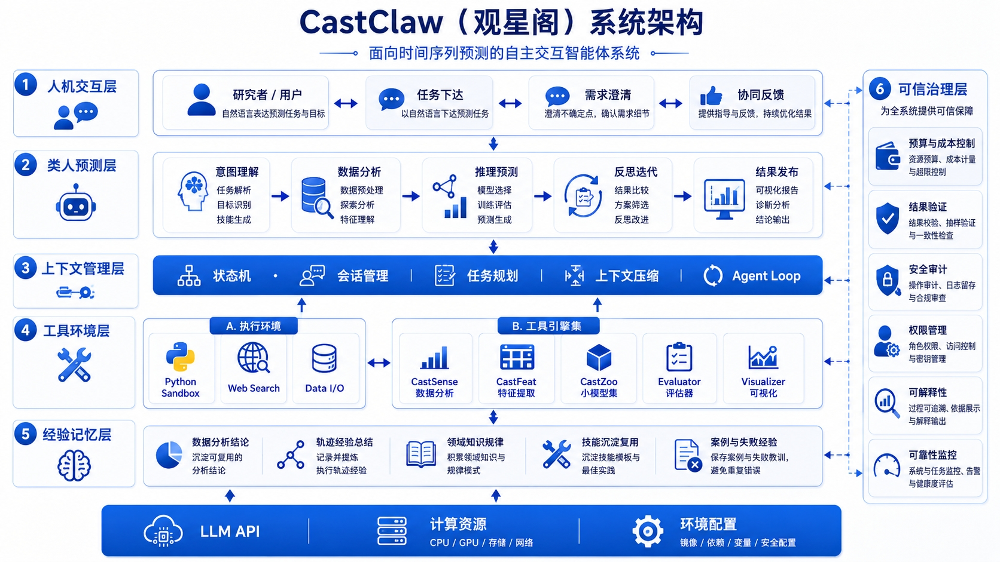

下面的视频展示了 CastClaw 在真实终端工作流中的使用方式，包括任务建立、智能体协同切换，以及预测流程中的关键交互环节。注意：演示视频为静音版，播放时没有声音。你也可以直接下载原始压缩版演示文件 castclaw-demo.mp4。
在能源调度、金融风控、工业智能等关键领域中，时间序列预测是支撑决策的重要基础。从最早的统计模型，到机器学习驱动的端到端方法，研究者不断尝试提升模型对复杂动态系统的刻画能力。然而，随着真实场景中数据非平稳性增强、情境因素日益复杂，传统“给定历史-预测未来”的静态建模范式，正在逐渐触及其能力边界。
当前时序预测正面临一个显著的困局：模型虽然在基准数据集上不断刷新精度指标，但在真实复杂环境中却往往表现出脆弱性。一方面，模型缺乏对情境信息的深度理解，难以应对分布漂移与突发事件；另一方面，预测过程高度“黑箱化”，缺乏可解释的推理路径，也无法在关键决策节点引入人类经验与领域知识。这种“单次前向推理”的范式，使得模型难以像人类专家一样，通过分析、判断与反思不断修正预测结果。
针对这一挑战，中国科学技术大学认知智能全国重点实验室团队提出了一种全新的范式：基于自主决策与人机协同的时序预测智能体 CastClaw。该方法不再将预测视为一次性输出，而是将其重构为一个“感知-表示-行动-反思-进化”的多轮交互与动态演化过程。CastClaw 通过构建可交互的预测环境，使模型能够主动调用插件能力、分析数据结构、识别关键变化模式，从而逐步逼近更可靠的未来趋势。
进一步地，CastClaw 突破了传统模型“被动响应”的局限，具备与环境进行自主交互的能力。它以 CastRuntime 作为执行核心，以 CastSkill 作为策略层，再通过 CastSense、CastFeat、CastZoo 等插件能力模块完成时序诊断、表示构建与模型编排；在关键节点上，还能够引入人类专家的判断，实现人机协同决策。这种从“模型预测”迈向“智能体决策”的转变，或将为时间序列研究打开一条通往认知智能的新路径。
关键词：需求澄清 → 任务建模 → 一次性生成预测方案。Agent 扮演"咨询专家"角色，通过多轮启发式对话消除预测目标的模糊性，只有当预测计划被用户最终确认后才正式启动任务。
用户输入"预测下周电力负荷"，Agent 不直接运行模型，而是反问："是否需要考虑工业节假日计划？是否融合天气预报数据？"
通过 2–3 轮对话，逐步明确预测的时间粒度（Granularity）、置信区间要求，以及关键外生变量的取舍。
在启动前展示一份结构化"预测计划书"，用户确认时间粒度、关键变量与置信区间后，Agent 才正式进入预测流程。
关键词：边做边想 → 实时介入 → 人机共建预测。这是一种"人在回路（Human-in-the-loop）"的动态交互，Agent 将内部思考逻辑和中间状态实时透明地展示给用户，并允许随时中断修正。
在数据清洗、特征提取、模型训练阶段，实时输出中间特征图（如注意力热力图），让执行过程始终可观测。
用户发现平滑窗口（Window Size）设置不合理时，可立即中断并在监控面板上修正参数，Agent 调整后继续执行。
记录用户在执行过程中的点赞 / 踩 / 修改操作，作为基于 AI 反馈的强化学习信号，持续优化 Agent 的决策偏好。
关键词：Claude Code + Plugin + 专业能力注入。将 CastClaw 作为一个能力插件（Skill / MCP Server），利用通用 LLM（如 Claude Code）作为前端接口，CastClaw 提供专业预测算力，分工互补，无缝渲染结果。
在 Claude Code 的终端里，用户直接下令 /castclaw predict ./sales.csv，无需切换工具或环境。
Claude Code 负责代码编写、环境配置和通用逻辑分析；CastClaw 负责深度的 VQ-VAE 表征、多维时序建模和归因分析。
预测生成的趋势图、误差分布图和带关键驱动因素的 Markdown 报告，直接在通用 AI 的 UI 中统一展示。
| 模式 | 用户角色 | CastClaw 角色 | 关键动作 | 交付物 |
|---|---|---|---|---|
| 苏格拉底式 | 决策者 | 咨询专家 | 反思、澄清、规划 | 深度预测报告 + 归因建议 |
| 认知伴随式 | 协同开发者 | 智能搭档 | 监控、反馈、即时调整 | 动态过程可视化 + 迭代结果 |
| 通专融合式 | 终端用户 | 专业插件 | 调用、转换、标准输出 | 预测 API 结果 + 渲染图表 |
CastClaw 通过三个职责分明的专属智能体协同工作，使用 Ctrl+1 / Ctrl+2 / Ctrl+3 在 CLI 中切换。每个智能体维护独立上下文，通过 .forecast/ 文件协议共享状态。
负责任务定义、数据诊断与阶段编排。并发启动两条分析轨道：定性域研究（WebSearch）+ 定量数据统计，融合为预测前报告。生成 2–4 个技能文件供人类审核确认。
驱动迭代实验循环——读取最佳结果与失败历史，从技能中选取模型配置，调用 generate_model 训练评估，进行反思记录，管理实验预算。停滞时触发人在回路暂停，等待人类反馈。
读取所有实验产物，生成各模型族最佳结果对比、按时序特征的性能分解、可视化脚本，以及结构化的最终 Markdown 预测报告，输出至 .forecast/reports/final-report.md。
CastClaw 不追求让人类完全退出预测流程，而是在关键决策与关键结果上保留人类确认。研究者可以在高价值节点注入领域知识、修正偏差并确认下一步策略，从而获得更高精度、更可信的预测结果。
在初始化阶段，由人类确认目标列、时间列、预测步长、评估指标和资源约束，避免任务定义偏差在后续实验中被持续放大。
Planner 生成技能草案后，研究者会审核模型族选择、参数搜索空间与风险警告，确保实验策略符合数据特征与领域先验。
当实验停滞、结果显著变化或生成候选最优方案时，人类对关键结果进行确认与干预，帮助系统纠偏并指导下一轮更高精度的预测探索。
CastClaw 将 Planner 生成并经人类审核的技能文件视为可以长期积累的系统经验。这些 Skill 不只服务于单次实验，而是会持续沉淀模型选择策略、参数搜索空间、适用条件与风险提示；随着 Skill 的不断积累，CastClaw 可以在新任务中更快启动、更准决策，并逐步实现面向预测任务的自主进化。
将模型配置、适用数据特征、参数搜索空间和风险警告写成结构化技能文件，避免经验只停留在单次实验里。
Skill 不会直接自动进入实验循环，而是先经过人类确认，再作为可信策略被长期保留，确保系统的后续进化建立在高质量经验之上。
面对相似的数据形态、预测步长或资源约束时，CastClaw 可以从已有 Skill 出发完成更快的任务初始化、更合理的实验设计和更高精度的预测探索，表现出随经验积累而增强的自主进化能力。
采用 CLI 作为主要交互界面，不引入额外 Web 服务。研究者可以在终端里直接切换智能体、查看状态、审核结果，保持研究流程的轻量与高效。
在任务设定、技能审核、实验停滞处理和关键结果判断等节点保留人类确认，把领域知识注入流程，避免自动化系统在错误方向上持续放大偏差。
通过 .forecast/ 工作目录协议组织任务状态、实验记录与报告产物，让多智能体协作过程始终可见、可审查、可复现，而不是隐藏在不可解释的内部状态里。
这套设计的核心取舍是：自动化负责效率，人类负责关键判断。CastClaw 不是替代研究者，而是帮助研究者更系统地组织预测流程、探索模型空间并沉淀可复用经验。
CastClaw 的系统架构可以概括为四层：CastRuntime 负责执行循环与上下文管理，CastSkill 负责技能检索与策略决策，Plugin Ecosystem 承担 CastSense / CastFeat / CastZoo 的具体能力调用，而 TimeEmbed 则提供统一表征、检索与经验对齐的基础能力支撑。

关键设计决策：阶段转换由 forecast_state 工具在文件系统层强制执行，而非依赖智能体自律性。即使 LLM 产生幻觉也无法跳过阶段，确保流程可靠性。CAST.md 约束文件在每次 Agent 初始化时自动注入上下文，实现项目级行为约束的持久化。
实验停滞或连续无改善时，Forecaster 自动暂停并请求人类反馈。你的领域知识将被记录为专家输入，重置无改善计数器后继续探索。
并发运行定性域研究（网络调研行业背景、风险因素）与定量数据诊断（由 CastSense 完成趋势、季节性、异常值与分布变化分析），融合为驱动后续技能与插件路线选择的分析报告。
Planner 基于分析报告生成结构化技能文件，含适用条件、参数搜索空间与风险警告。人类确认通过后才进入实验阶段，避免盲目跑模型。
通过 CAST.md 或默认值设定最大实验次数、连续无改善阈值与崩溃阈值。预算追踪实时更新，防止资源浪费。
项目级约束自动注入每个智能体上下文：禁用模型列表、资源限制、评估偏好、领域说明。使用 /cast-creation 交互式生成。
通过 CastSense、CastFeat、CastZoo 等插件模块，把时序诊断、表示构建与模型编排拆分为可组合、可替换、可持续演进的专业能力层。
按照插件化 Agentic Time Series Forecasting 的设计逻辑，CastClaw 的能力链条不是“先选模型再直接训练”，而是沿着 Perception → Representation → Action → Reflection 的顺序逐步推进。这样做的结果是，系统不再只依赖某一个模型的泛化能力，而是依赖由诊断、表示、模型调度和反思共同组成的能力闭环。
CastRuntime 负责驱动 Agent Loop，CastSkill 负责从经验与上下文中选择路线，插件层负责落地能力调用，底层表征能力则提供统一的语义支撑。
用户任务进入系统后，CastRuntime 维护上下文与中间状态，CastSkill 检索最合适的技能策略，再按需调用插件能力完成数据认知、表示构建和模型执行。预测不再是单点函数调用，而是一个可迭代、可审查、可反馈的多步决策过程。
负责任务解析、上下文管理、Reason-Act-Reflect 循环、中间状态维护和结果反馈闭环。
负责技能库检索与策略选择，根据任务上下文决定插件调用顺序、组合方式和搜索路径。
作为底层能力层提供统一表征、相似模式检索、跨任务经验对齐和记忆索引支撑。
插件层是 CastClaw 的核心工具箱。它不是静态模型列表，而是一组可插拔、可组合、可持续演化的专业能力模块，负责把“看数据”“做表示”“跑模型”拆成三个可独立优化的环节。
CastSense 负责回答“数据是什么样的”。它不是简单输出几项统计量，而是把趋势、季节性、异常、分布变化和数据质量问题整理成可用于后续决策的结构化认知信息，为技能检索、策略生成和风险判断提供依据。
CastFeat 负责回答“从数据中提取什么”。它面向的是模型可用的representation，而不是停留在表层统计值上。系统可以基于不同任务、模型族和上下文，把 lag、rolling、patch、token、embedding 等构造成适配的输入表示。
CastZoo 负责回答“使用什么模型，以及如何组合”。它不仅维护模型资产，更承担模型调度与执行的职责。系统可以在统计模型、机器学习、深度学习与基础模型之间进行选择，并进一步支持 ensemble、pipeline 与 coarse-to-fine 等组合策略。
这套插件工具箱的意义在于：CastClaw 不再以“某个模型是否更强”作为唯一中心，而是以“系统是否能够先理解数据、再生成表示、再选择合适模型并持续反思”作为核心能力标准。也正因为如此，CastClaw 更适合复杂、多变且需要人机协作的真实预测环境。
Planner 不急着跑实验，而是先澄清任务定义、确认约束、理解行业背景并体检数据结构，先形成对“问题是什么、风险在哪里、该从哪条路线切入”的初步判断。
Forecaster 不是盲目穷举模型，而是读取已有证据与 Skill 假设，小步快跑地组织实验、识别失败原因、控制预算，并在必要时引入人类反馈完成纠偏。
Critic 负责把实验结果从“谁分数更高”提升到“为什么有效、在什么条件下有效、还存在哪些风险”，将性能分解、图表证据和结论建议整理为可审查的最终报告。
CastClaw 遵循严格的阶段化工作流，阶段转换由 forecast_state 工具强制执行——不可跳过任何阶段。这意味着系统必须先完成问题诊断，再形成策略假设，再进入实验验证与报告复盘，确保每次预测都可追溯、可解释、可复现。
专家不会在任务模糊时直接开跑。Planner 首先定义预测任务：数据集路径、目标列、时间列、预测步长（Horizon）、回看长度（Look-back）、训练/验证/测试分割比例、评估指标与候选模型族；随后调用 forecast_state init 创建 .forecast/ 目录，并用 forecast_task 冻结 task.json。必要时还可用 /cast-creation 生成项目级约束文件。
专家在动手前会先理解场景。Planner 并发启动两条分析轨道：定性轨道 调研行业背景、关键事件与潜在风险；定量轨道 调用 CastSense 诊断趋势、季节性、平稳性、波动率、异常值与分布变化。双轨结果融合为 .forecast/reports/pre-forecast.md，作为后续策略判断的证据基础。
基于前面的诊断证据，Planner 生成 2–4 个结构化技能文件，把“该尝试什么模型路线、在什么条件下尝试、风险点是什么”显式写出来。每个 Skill 都包含适用条件、参数搜索空间、特征模板（配置 JSON）及风险警告；经人类审核确认后，系统才进入实验循环。
Forecaster 使用已确认 Skill 组织实验：读取当前最佳结果与近期失败历史 → 选取插件与模型配置 → 调用 CastFeat 构建表示 → 由 CastZoo 执行训练评估 → 用 forecast_reflect 记录失败归因与改进线索 → 预算检查 → 进入下一轮。若长期停滞或结果异常，则触发人在回路暂停，让专家反馈进入下一轮决策。
Critic 读取全部实验产物，完成一次类似专家复盘会的整理：比较各模型族最佳结果，按时序特征（趋势 / 季节性 / 平稳性）拆解性能，生成时序图与误差分布图，并输出结构化最终预测报告到 .forecast/reports/final-report.md。最终交付的不只是分数，更是可解释的判断依据与下一步建议。
CastClaw 通过主力模型与轻量 LLM 的分层协作完成不同复杂度的任务，同时依托 Bun、Python/uv 与 Vercel AI SDK 组成跨 TypeScript 与 Python 的运行环境。
CastClaw 在基础模型接入上保持开放，不预设唯一供应商路线。无论是国外主流大模型，还是国内可部署模型与推理服务，都可以根据你的算力条件、成本预算和合规要求灵活接入系统。
我们鼓励研究者根据自身实验环境选择最合适的模型来源，尤其欢迎结合昇腾算力部署 API 进行本地化或机构内落地，以兼顾性能、成本和可控性。
CLI 运行时与包管理器，驱动 CLI 交互与智能体编排层。
ML 后端运行环境，uv sync 一键安装全部依赖，无需手动管理虚拟环境。
LLM 提供商抽象层，支持 20+ 提供商（Anthropic、OpenAI、Google、OpenRouter 等），格式 provider/model-id。
为了方便快速体验 CastClaw，我们在页面中提供了一份可直接下载的电力负荷样例数据集 load.csv。该文件包含约 1.5 万条小时级样本，可用于初始化一个典型的短期负荷预测任务。
需要注意的是，这份样例数据集的实际字段名为 TIMESTAMP（时间列）和 LOAD（目标列）。如果你直接使用这份样例文件，请在 Planner 中按真实字段名建立任务，而不是使用下方演示里的 date / OT 占位写法。
CLI 启动后，在 Planner 标签页（Ctrl+1）中输入任务描述：
下面给出一个电力负荷预测任务的完整示例，展示如何在 Planner 中描述任务，以及如何通过 CAST.md 预先写入实验约束。
在 Planner 标签页中，可以直接输入如下任务描述，让 CastClaw 建立预测任务并进入后续分析与技能审核流程：
CastClaw 由中国科学技术大学认知智能全国重点实验室 AGI 研究组多名师生研发构建。
CastClaw 借鉴了 OpenCode（CLI 框架基础）与 Time Series Library（ML 后端模型库）的源代码，在此致以诚挚感谢。本项目也受到了 OpenClaw 源码实现思路的启发。本项目得到了中国科学技术大学与华为 2012 应用场景创新实验室校企合作基金的鼎力支持；同时，研发过程中所需的计算资源由华为昇腾 AI 百校计划全力保障。
如果 CastClaw 对你的研究或项目有帮助，欢迎引用：